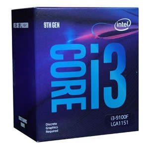
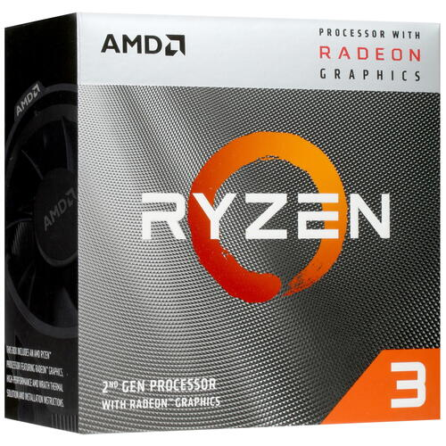

PROCESADORES GAMING POR MENOS DE 100 EUROS
En este rango de precios enontraras procesadores gaming con 4 nucleos y 4/8 hilos que te permiten jugar a videojuegos que no requieran de un alto rendimiento
Inte
AMD
Procesador
Intel i3-9100F
Ryzen 3 3200G
Imagen


Nucleos
4
4
Hilos